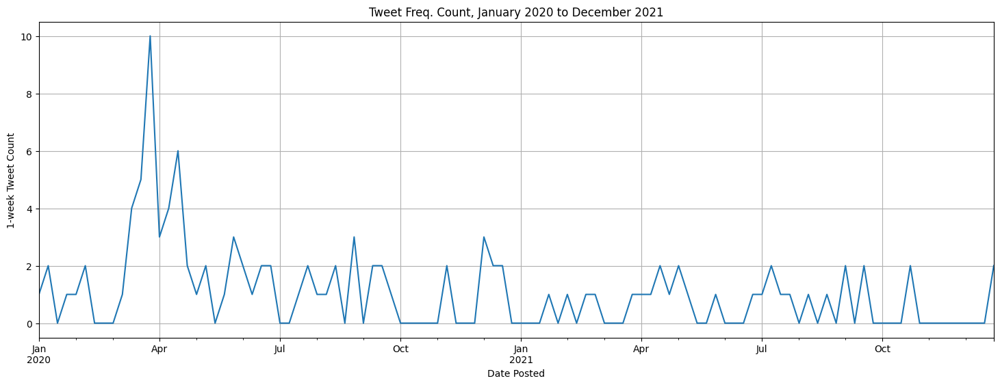
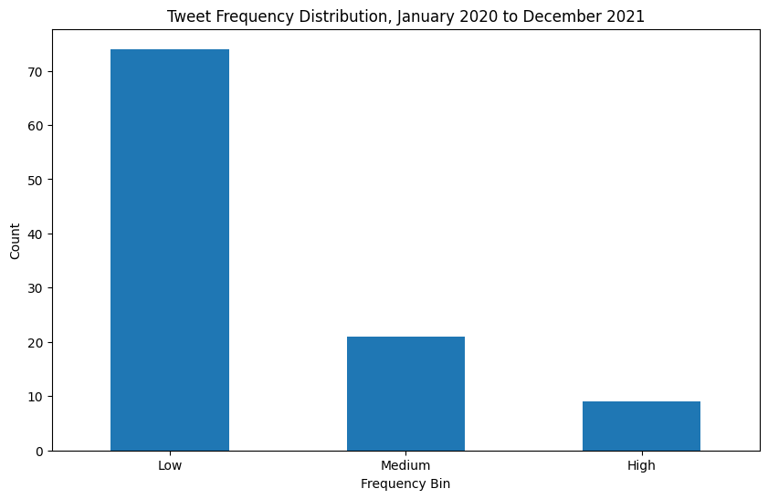

Time Series Analysis
OVERALL TWEET TIMELINE
-
Time bins. The preprocessed tweets were bundled into regular time bins, in particular, 1-week epochs which are granular enough to show information about tweet frequency variations while accommodating the small dataset. This was accomplished by using the pandas groupby method on our tweet dataframe. A pandas Grouper object was used to group timestamps into bins at the desired frequency (1 week) and count up the number of entries in each bin using the .size() aggregator function before plotting the timeline.
 Here we can see that the frequency of relevant tweets peaked at the tail end of March 2020.Tweet Frequency Count
# Group the data by 1-week intervals covid_weekly = covid.groupby(pd.Grouper(key='Date Posted', freq='1W', convention='start')).size() covid_weekly.plot(figsize=(18, 6)) plt.ylabel('1-week Tweet Count') plt.title('Tweet Frequency Count, January 2020 to December 2021') plt.grid(True) plt.show()
BINNING
-
Frequency bins.
For the analysis, we categorized the tweet frequencies into three bins: low, medium, and high. Based on the distribution of tweet counts, we assigned the following labels to the bins:
- Low (0,1): 74 tweets
- Medium (2): 22 tweets
- High (3+): 8 tweets
Below is a plot showing the distribution of tweets across these bins. Tweet Frequency Distribution
# Define the ranges for binning based on frequency distribution bins = [0, 1, 2, 10] # specified ranges to address skewness labels = ['Low', 'Medium', 'High'] # Create a new column with the categorical variable feature based on binning covid_weekly['tweet_frequency_bin'] = pd.cut(covid_weekly, bins=bins, labels=labels, include_lowest=True) # Plotting the data covid_weekly['tweet_frequency_bin'].value_counts().sort_index().plot(kind='bar', figsize=(10, 6)) plt.xlabel('Frequency Bin') plt.ylabel('Count') plt.xticks(rotation=0) plt.title('Tweet Frequency Distribution, January 2020 to December 2021') plt.show()